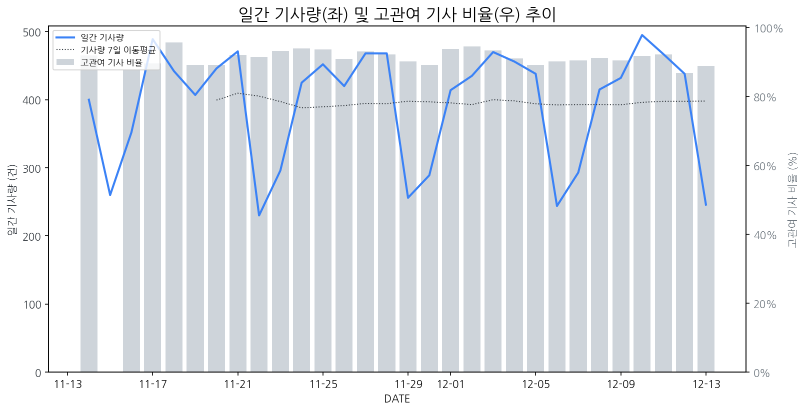

1
시장 활동 지표
기사량 추세 & 이상 징후 탐지
시장의 '전체 기사량'이 평소보다 비정상적으로 급증했는지(Spike)를 차트로 확인하고, LLM이 분석한 급등의 핵심 원인을 파악할 수 있음

고관여 기사란? 산업 연관 키워드로 수집된 기사들 중 디스플레이 키워드에 가중치를 반영하여 도출된 관련성 높은 기사
수집된 기사 수 (2025-12-13)
246
+1% WoW
기사량 변동 수준 (7일 이동평균 대비)
±6.7% 이하
2
오늘의 키워드
급격한 관심 ↑, 주목해야 할 키워드
1
ar
+2.7σ
에어몬의 ARKI 대상 수상 소식으로 AR 기술 관심도가 급증했습니다.
Related Metrics
금일 언급량: 9, 전일 대비: +6
Interpretation
AR 디스플레이 수요 증대 기대
Next Step
'ar' 관련 상세 기사 및 경쟁사 반응 모니터링
3
실시간 Risk 키워드
경계해야 할 시그널 탐지
특정 토픽의 부정 감성 점수가 급등할 때 이를 즉시 탐지하고, "근거 기사" 링크를 통해 리스크의 실체를 빠르게 파악할 수 있음
키워드 분석 결과, 오늘은 걱정할 만한 하락 신호가 없습니다. (부정 언급량 변화: +1.5σ 이내)
4
주요 이벤트 모니터링
실시간 산업 동향 파악을 위한 주요 활동
최근 발생한 주요 기업들의 신제품 출시, 투자 등 주요 이벤트를 제공하여 매일 경쟁사 동향을 확인할 수 있음
PC마켓에서 소비자가 취향에 맞게 조립할 수 있는 게이밍 키보드 '베어본 키트'를 새롭게 출시했습니다. 이는 사용자 경험을 극대화하며 PC 하드웨어 시장의 새로운 트렌드를 제시할 것으로 보입니다.
Impact
개인화 및 커스터마이징 트렌드가 강화됨에 따라, 디스플레이 시장에서도 고해상도, 고주사율, HDR 지원 등 사용자 맞춤형 기능 강화 및 다양한 폼팩터 개발에 대한 수요가 증가할 수 있습니다.
Next Step
디스플레이 제조 기업은 게이밍 디스플레이 라인업에 있어 개인의 선호도를 반영할 수 있는 커스터마이징 옵션 강화 및 관련 소프트웨어 생태계 구축을 고려해야 합니다.
유진로봇, 넥스트칩, 한라캐스트 등 자율주행차 관련 종목들의 주가가 급등했습니다. 이는 자율주행 기술 발전과 함께 관련 부품 및 기술 수요 증가에 대한 기대를 반영합니다.
Impact
자율주행차의 고도화는 차량 내 디스플레이 및 관련 부품 시장에 대한 수요 증대와 함께, 고해상도, 고신뢰성, 첨단 기능(HUD, 인포테인먼트 등)을 갖춘 디스플레이 기술 개발 경쟁을 촉진할 수 있습니다.
Next Step
자율주행차 시장 동향을 면밀히 주시하며, 차량용 디스플레이의 요구사항 변화에 선제적으로 대응할 수 있는 차세대 디스플레이 기술 개발 및 포트폴리오 확장을 고려해야 합니다.
디스플레이 시장 주요 사업자가 '수고했어요, 올 한 해도'라는 문구와 함께 산타클로스 관련 크리스마스 이벤트를 진행합니다. 이는 연말을 맞아 소비자에게 감사의 메시지를 전달하고 긍정적인 브랜드 이미지를 구축하려는 목적입니다.
Impact
이러한 감성 마케팅은 소비자의 브랜드 호감도를 높이고, 연말 시즌의 소비 심리를 자극하여 잠재적으로 디스플레이 제품 판매에 긍정적인 영향을 줄 수 있습니다.
Next Step
경쟁사의 감성적 접근에 대응하여 자사 브랜드의 고유한 가치와 혁신성을 강조하는 맞춤형 마케팅 전략을 수립하여 소비자에게 어필해야 합니다.
뉴욕증시에서 브로드컴의 비관적인 전망으로 AI 관련 테마주들이 급락했으며, 국제 유가(WTI) 역시 7개월래 최저치로 떨어졌습니다. 이는 기술주 전반의 투자 심리 위축과 에너지 시장의 하방 압력을 시사합니다.
Impact
AI 반도체 수요 둔화 가능성이 제기됨에 따라, AI 서버 및 고성능 디스플레이 수요에 대한 불확실성이 증대될 수 있습니다.
Next Step
AI 관련 디스플레이 기술 개발 로드맵을 재검토하고, AI 외 다른 성장 동력 확보 전략을 강화하여 시장 변동성에 대비해야 합니다.
5
지금 주목해야 할 뉴스 TOP 3
자율주행차 관련주, '껑충껑충' 유진로봇·넥스트칩·한라캐스트·에스...
로컬 요약 모델 실행 중 오류 발생: 제목을 클릭하여 기사 전문을 확인할 수 있습니다.
폴더블폰 시장에 뛰어드는 애플, 혁신일까 모험일까…세가지 승부처
13일(현지시간) IT매체 테크레이더 등 외신은 폴더블 아이폰의 성공을 위해 넘어야 할 세 가지 과제로 가격, 디스플레이 주름, 배터리 효율을 꼽았다.
그라비티, 'Ragnarok Monster Kitchen' 글로벌 정식 론칭…IP 재해석
로컬 요약 모델 실행 중 오류 발생: 제목을 클릭하여 기사 전문을 확인할 수 있습니다.